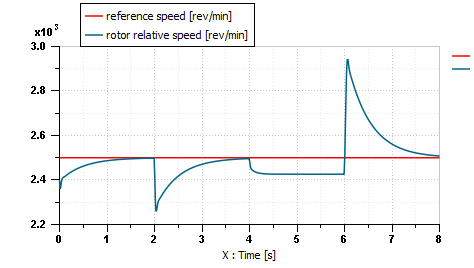

This demonstration presents a tabulated motor speed control with a varying mechanical load.
$AME/demo/Libraries/EMD/11_TMotorSpeedLoop.ame
Electric machines and the associated power converters can be complex to model. For example, saturation phenomena in machine air gaps or power electronics losses for specific system may not be entirely understood. Moreover, getting into a greater level of details might require additional computation time that are incompatible with large system modeling. In order to deal with these modeling issues, it can be interesting to use functional models with average behavior based on observations or measurements.
The EMD tabulated motor model represent a complete electric powertrain using data files to define the machine and its converter losses for a given control. It is therefore adapted to large system models where average energetic transfers are the main issue but high dynamics are not of first interest.
In this example we propose to build a speed control loop for this motor, with a varying mechanical load. The model sketch is represented on Figure 1:
Figure 1: Tabulated motor speed control loop model
This example control loop features a PI controller. The tabulated motor uses two data files to define the maximum and minimum torque the motor can handle, a saturation limitation is therefore in the loop implicitly. The machine is supplied with electric power with a constant DC voltage source.
The motor and load torque are illustrated on Figure 2:
Figure 2: Motor and load torque on inertia
We observe that the motor torque balances the load torque. It is even higher, since there is additional viscous friction on the inertia. The speed, however, is not perfectly regulated to the reference velocity value, so that a different equilibrium point is reached between 4 [s] and 6 [s] (Figure 3):

Figure 3: Motor and reference velocity
Figure 4 explains the problem of regulation due to the machine's torque saturation:
Figure 4: Torque characteristics and equilibrium points
The resistive torque is due to the load torque and the viscous friction on the inertia. When the load torque rises, the resistive torque characteristic is translated along the Y axis. For different values of load torque, a set of resistive torque characteristics can be drawn ( \(\Gamma res1(\Omega)\) to \(\Gamma res8(\Omega)\) ).
The problem of motor saturation is illustrated by Figure 5. We observe that torque commands higher than approximately 182 [Nm] cannot be reached:
Figure 5: Motor and command torque
This torque limit, at the speed when saturation occurs (around 2426 [rpm]), can also be seen by launching the Table visualization tool, attached to the EMDTMF01 submodel:
Figure 6: Table visualization tool